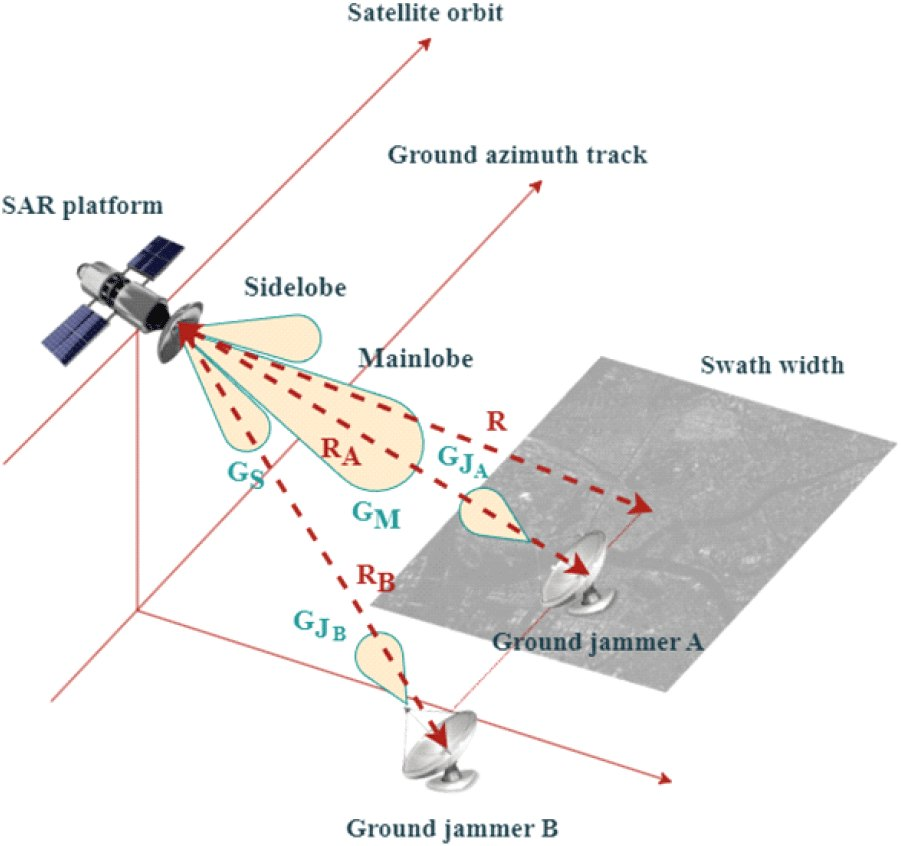

연구실적 · 국내전문학술지
지상 레이다에 의한 위성 SAR 재밍 시나리오 설계 및 효과 분석
Scenario Design and Analysis of Satellite SAR Jamming Performance by Ground Radar

초록
SAR(synthetic aperture radar) 영상 기술은 군사 및 국방 응용 분야에서 널리 활용되고 있다. 위성 SAR 시스템은 고정 궤도에서 운용됨에 따라 지상 레이다 신호로 인한 재밍에 취약하다. 본 논문에서는 실제 위성 SAR에서 발생한 간섭 사례를 통해 재밍 효과를 정량적으로 분석하고, 이를 기반으로 다양한 재밍 시나리오를 설계한다. JCR(jamming to clutter ratio)을 주요 재밍 성능 지표로 설정하고, 지상 재머와 위성 시스템 간의 관계를 분석한다. 다양한 레이다 사양 및 위성 궤도에 따른 SAR 영상 분석 모의실험을 수행하여 효과적인 재밍 발생 환경을 제시한다. 지상 재머 시스템의 성능에 따른 SAR 영상의 품질 저하를 확인하고, 실제 SAR 재밍 사례와 비교하여 검증한다. 본 연구는 위성 SAR 재밍에 대한 이해를 높이고, 적대적 우주 감시 시스템에 대한 효과적인 방어 전략 개발에 기여할 수 있을 것이다.
사이트 원문 표기
이희우 (Hee-Woo Lee), 최민호 (Min-Ho Choi), 이우경 (Woo-Kyung Lee), 김성표 (Seong-Pyo Kim), “지상 레이다에 의한 위성 SAR 재밍 시나리오 설계 및 효과 분석”, 한국전자파학회논문지, 제35권 5호, 2024년
BibTeX
@article{Lee_2024,
title={Scenario Design and Analysis of Satellite SAR Jamming Performance by Ground Radar},
volume={35},
ISSN={2288-226X},
url={http://dx.doi.org/10.5515/kjkiees.2024.35.5.381},
DOI={10.5515/kjkiees.2024.35.5.381},
number={5},
journal={The Journal of Korean Institute of Electromagnetic Engineering and Science},
publisher={Korean Institute of Electromagnetic Engineering and Science},
author={Lee, Hee-Woo and Choi, Min-Ho and Lee, Woo-Kyung and Kim, Seong-Pyo},
year={2024},
month=May,
pages={381–393}
}